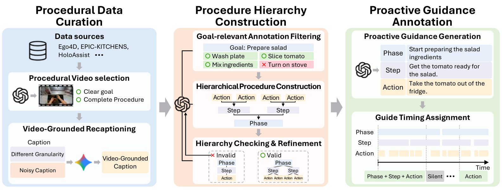

ProactiveCoach-Instruct
10,007 samples
Hierarchically structured guidance with level-specific timing for learning what to say and when to respond.
1 Sungkyunkwan University 2 Nanyang Technological University
* Corresponding authors
What to say. When to say it. At the right level of detail.
Proactive procedural assistance requires an AI system to monitor ongoing activity, determine when a guided event is complete, and provide appropriate guidance for what comes next. Step-level supervision alone offers limited evidence about progress within a step.
We organize procedural guidance into a phase–step–action hierarchy. Lower-level actions indicate what has been completed and what remains, while higher-level phases clarify the purpose and expected outcome of each step.
ProactiveCoach-Instruct provides multi-level training data, and ProactiveCoachBench evaluates proactive guidance and changes in guidance granularity. Joint training teaches a vision-language model to generate guidance across all three levels; a lightweight router adapts the displayed guidance to the user's request.
Project summary based on the current manuscript. Abstract wording is being revised.
Explore the hierarchy illustrated in the paper.
This is a conceptual example, not a live model output.
CHOOSE THE USER'S REQUEST
“Next, make the sauce for the pasta.”
The guidance level changes with the user's needs. Response timing is defined separately at each level.
Real annotation examples from the shared dataset preview. Choose a task and level to explore its guidance sequence.
Times and guidance are reproduced from review-sample-v0.2. These are dataset annotations, not generated model predictions. Original videos are not redistributed here.
10,007 samples
Hierarchically structured guidance with level-specific timing for learning what to say and when to respond.
1,112 samples
Multi-level proactive guidance evaluation, including adaptation when the requested guidance level changes.

Sources: Ego4D Goal-Step · Ego-Exo4D · EPIC-KITCHENS · CaptainCook4D · EgoExoLearn · HD-EPIC · WTaG · HoloAssist
Selected Qwen3-VL-4B results from Table 2.
Avg. is the mean of sF1, gF1, and PQS. Higher is better.
ProactiveCoachBench evaluates phase, step, and action guidance; EgoProactive evaluates step-level guidance. Evaluation uses recent video and ground-truth dialogue history. These are manuscript results, not an end-to-end deployment claim.
Step-level Avg. on ProactiveCoachBench, Table 3. Gains are absolute score points.
| Backbone | Step-only | Hierarchical | Gain |
|---|---|---|---|
| Qwen3-VL-4B | 49.32 | 58.96 | +9.64 |
| Qwen3-VL-8B | 53.07 | 59.37 | +6.30 |
| Qwen3.5-4B | 50.06 | 59.30 | +9.24 |
| Qwen3.5-9B | 51.18 | 58.81 | +7.63 |
Matches guidance by timing and semantic content.
Measures response versus silence decisions.
Combines timing decisions with guidance quality.
Browse 30 annotation examples. This preview does not include original videos or the full dataset.
Training, inference, guidance routing, and evaluation code. See the README for dependencies, data requirements, and validation limits.
The preprint is being revised. The archival paper link will be added when available.